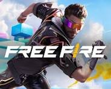
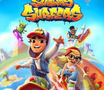
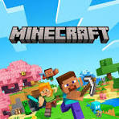

Free Fire is a popular battle royale game developed by 111 Dots Studio and published by Garena. It was released in 2017 and has gained a massive player base worldwide. In Free Fire, players are dropped onto an island where they must fight against each other to be the last person standing. The game features various weapons, vehicles, and character abilities that players can use to survive and eliminate their opponents. Free Fire is known for its fast-paced gameplay, vibrant graphics, and regular updates that introduce new content and events to keep players engaged.

Subway Surfers is a popular endless runner game developed by Kiloo and published by SYBO Games. It was released in 2012 and has gained a massive player base worldwide. In Subway Surfers, players control a character running through a subway tunnel, avoiding obstacles and collecting coins. The game features various power-ups, characters, and themes that players can unlock and use to enhance their gameplay experience. Subway Surfers is known for its simple yet engaging gameplay, vibrant graphics, and regular updates that introduce new content and events to keep players engaged.

Minecraft is a popular sandbox game developed by Mojang Studios. It was released in 2011 and has become one of the best-selling video games of all time. In Minecraft, players can explore a blocky, procedurally generated world and build structures, gather resources, and survive against various creatures. The game features different modes, including Survival, Creative, and Adventure, allowing players to choose their preferred playstyle. Minecraft is known for its limitless creativity, multiplayer capabilities, and regular updates that introduce new features and content to keep players engaged.